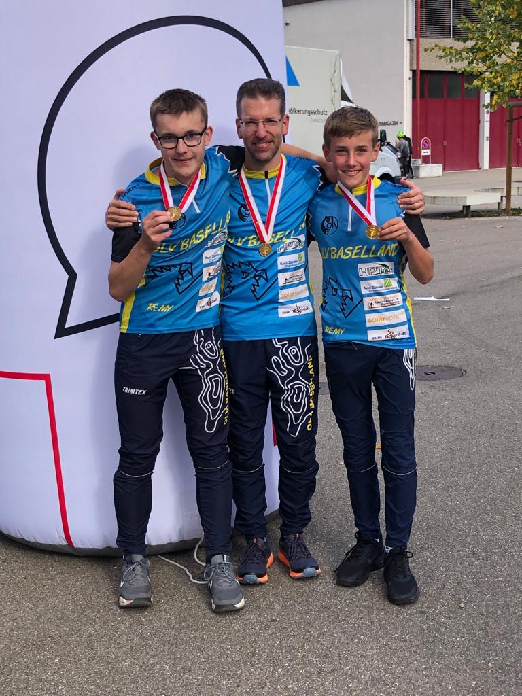

Beim Orientierungslauf muss man diverse Posten in einer bestimmten Reihenfolge angelaufen. Meistens finden die Wettkämpfe im Wald statt. Es gibt allerdings auch Wettkämpfe im Dorf, welche in Form von vergleichsweise kurzen Wettkämpfen, den sogenannten Sprints durchgeführt werden.
Im Sommer 2015 habe ich an einem Schnuppertag meines jetzigen Vereins "OLV Baselland" im Rahmen des X-Island Ferienpasses teilgenommen. Danach konnte ich mehrere Schnuppertrainings absolvieren. Da mir der Sport gefiel, wurde ich Mitglied und trainiere seither regelmässig im Vereinstraining.
